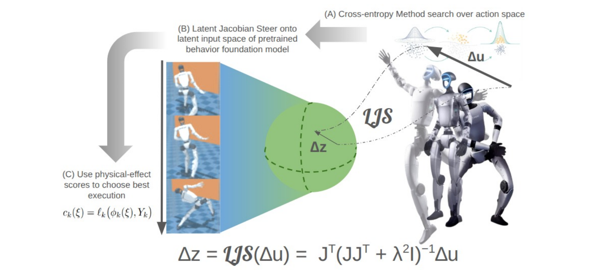
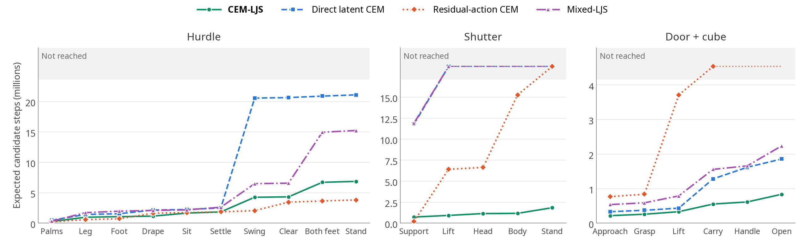
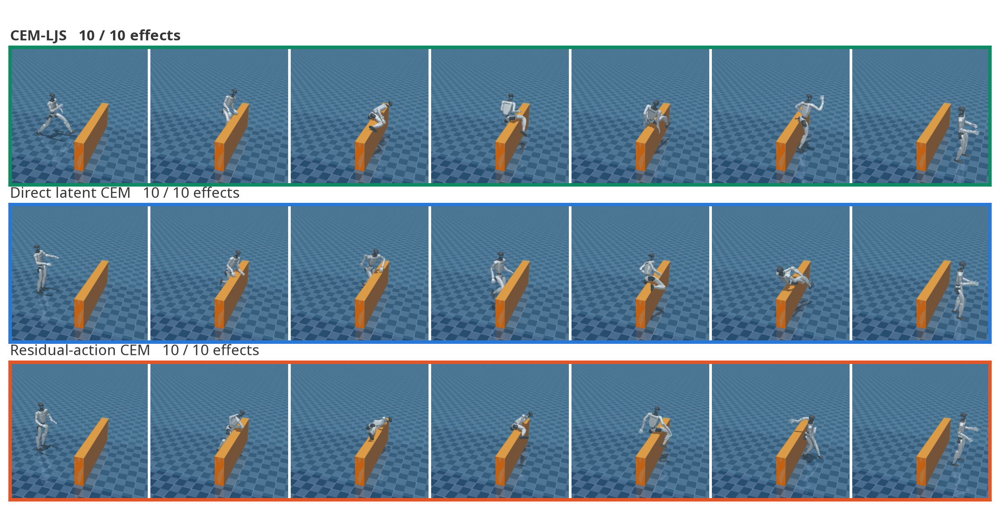
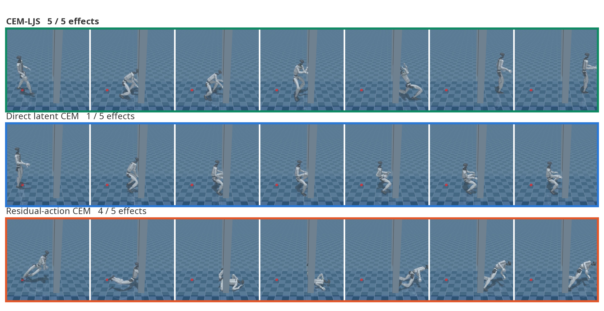
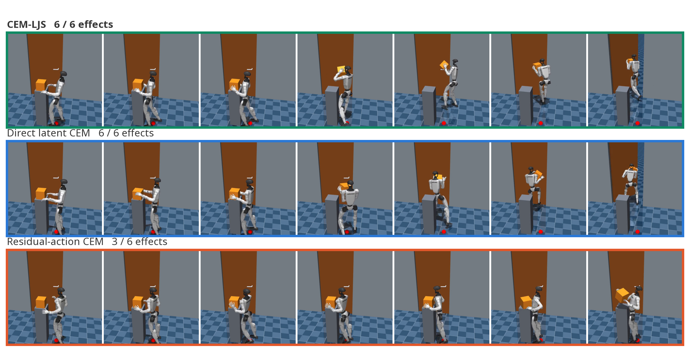
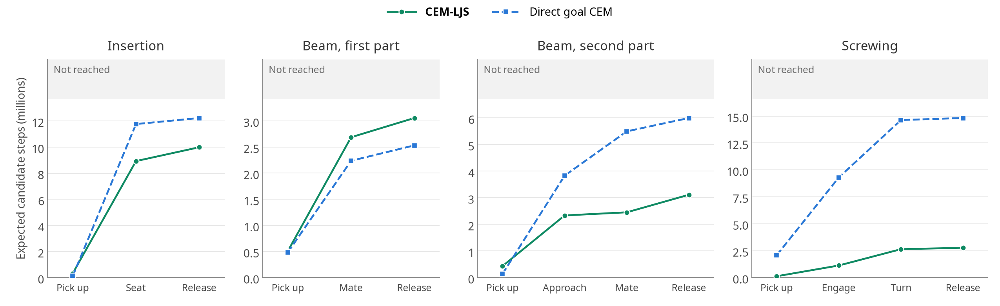

Propose joint-action changes
CEM samples changes to the G1 controller’s 29 joint targets. Simulated outcomes rank these proposals, and the strongest candidates guide the next round of sampling.
Eliciting Complex Contact-Rich Behaviors from Pretrained Humanoid Controllers
LJS discovers new physical interactions by mapping joint-action proposals into a frozen controller’s latent space and evaluating their effects in simulation.
Using LJS, a frozen BFM-Zero humanoid controller traverses a hurdle, lifts and passes beneath a shutter, and opens a door with a carried cube. These behaviors are discovered through simulator search, without task-specific policy training or reference motions.
Joint-action perturbations provide a direct way to express local control changes, while latent commands retain the structure of the pretrained policy. LJS connects these spaces through a damped local inverse of the policy Jacobian, allowing search in joint-action coordinates while executing through the frozen controller.

CEM samples changes to the G1 controller’s 29 joint targets. Simulated outcomes rank these proposals, and the strongest candidates guide the next round of sampling.
A damped inverse of the policy Jacobian maps each proposal into a 256-dimensional latent change. The updated command is normalized for execution through the frozen controller.
Using live observations, the frozen policy generates each rollout. Search executes the best valid command and replans from the new state until the physical effect is achieved.
Here, J is the local policy Jacobian with respect to the latent command, λ controls damping, and Δu is the proposed joint-action perturbation.
A small latent change can move some combinations of joints strongly and others barely at all. Even searching the Jacobian’s own 29-dimensional latent subspace leaves this imbalance intact. LJS starts with comparable action changes and uses the local inverse to account for the controller’s sensitivity.
Write the policy Jacobian as J = UΣVT, with singular values si. For equal-variance Gaussian proposals with variance σ2, the local action variance along direction i is:
Exploration is dominated by directions to which the controller is most sensitive.
When si is large relative to λ, the variance approaches σ2. Damping suppresses weakly responsive directions.
LJS therefore gives realizable action directions comparable exploration while limiting excessive latent changes. These directions can combine multiple joints. The argument concerns the policy’s local response; simulator rollouts determine which proposals produce useful contact-rich motion.
Tasks are specified through ordered physical effects, such as establishing support, raising an object, or clearing an obstacle. Each effect has a score that guides search and an acceptance condition that determines completion. The result is a sequence of latent commands. During execution, the frozen policy continues to receive updated observations and generate joint targets, retaining its feedback response throughout the interaction.
Across ten unseen seeds, with the same effects and settings for every method, CEM-LJS gets furthest on every task, and it is the only one that gets through the shutter.
| Method | Hurdle | Shutter | Door + cube |
|---|

The gain comes from coupling the two spaces, not from the optimizer or from searching fewer dimensions. Steering through the Jacobian generally beats searching the latent directly, and a random latent subspace of the same size gets nowhere.
| Search | Shutter | Hurdle | Door + cube |
|---|---|---|---|
| Joint-action proposals through the Jacobian | |||
| CEM-LJS | 7 / 10 | 3 / 10 | 10 / 10 |
| MPPI with LJS | 4 / 10 | 2 / 10 | 9 / 10 |
| LATTICE-style LJS | 3 / 10 | 1 / 10 | 7 / 10 |
| Zero-mean refinement LJS | 2 / 10 | 1 / 10 | 2 / 10 |
| Targeted-mean refinement LJS | 1 / 10 | 0 / 10 | 4 / 10 |
| Gaussian LJS | 0 / 10 | 1 / 10 | 2 / 10 |
| Proposals in the latent space | |||
| Direct latent CEM | 0 / 10 | 1 / 10 | 6 / 10 |
| Direct latent MPPI | 3 / 10 | 0 / 10 | 6 / 10 |
| Direct latent Gaussian | 0 / 10 | 0 / 10 | 4 / 10 |
| Direct latent targeted refinement | 0 / 10 | 0 / 10 | 3 / 10 |
| Random 29-dimensional latent subspace | 0 / 10 | 0 / 10 | 0 / 10 |
Precise contacts must work together with whole-body coordination. These comparisons show how each method establishes support, manipulates objects, and moves through the task, using the best run of each method.
Residual actions can push the robot through an effect, but they fight the coordination the controller already has. Replayed with the G1’s real joint and motor limits, CEM-LJS moves more smoothly, uses less power and slips less, and BFM-Zero’s own motion discriminator rates it as more human.
| Per effect | CEM-LJS | Residual-action CEM |
|---|---|---|
| Mechanical power | 1.6 W/kg | 2.6 W/kg |
| Joint jerk | 782 rad/s³ | 1,660 rad/s³ |
| Time at the torque limit | 6% | 20% |
| Peak joint speed | 33% of G1 limit | 50% of G1 limit |
| Foot slip under load | 0.02 m/s | 0.11 m/s |
| Human-likeness | −0.9 | −2.4 |
Because a task is just a set of physical-effect scores, we can shape how the robot moves inside the search itself. Adding BFM-Zero’s motion discriminator to the hurdle’s scores gives a calmer, more human-like crossing, at the cost of a longer search.
| Per hurdle effect | Without | With BFM-Zero’s discriminator |
|---|---|---|
| Mechanical power | 1.4 W/kg | 0.9 W/kg |
| Joint jerk | 841 rad/s³ | 633 rad/s³ |
| Peak body turning speed | 2.7 rad/s | 2.1 rad/s |
| Human-likeness | −1.8 | −0.8 |
| Seeds completed | 10 / 10 | 8 / 10 |



The effect definitions don’t need retuning when the setup changes. From new starting positions and headings, CEM-LJS still gets through the shutter most of the time, while the baselines rarely do.
| Method | Full tasks completed |
|---|---|
| CEM-LJS | 8 / 10 |
| Direct latent CEM | 1 / 10 |
| Residual-action CEM | 0 / 10 |
| Mixed-LJS | 2 / 10 |
This setting is for practitioners who want success on every seed. A CEM-LJS search can occasionally settle in a poor local basin, so we retry a failed effect from an earlier state and score every candidate under varied friction, mass, motor strength and control delay. CEM-LJS then completes every task on every seed, in at most 15 minutes.
| Method | Hurdle | Shutter | Door + cube |
|---|---|---|---|
| CEM-LJS | 10 / 10 | 10 / 10 | 10 / 10 |
| Direct latent CEM | 6 / 10 | 6 / 10 | 10 / 10 |
| Residual-action CEM | 7 / 10 | 0 / 10 | 2 / 10 |
| Mixed-LJS | 2 / 10 | 3 / 10 | 10 / 10 |
| CEM-LJS mean search time | 8.0 min | 5.5 min | 2.4 min |
The same search also steers a frozen Play2Perfect hand policy to insert, assemble and screw parts, then release them in place, without fine-tuning it for any of these tasks, and does as well as or better than direct goal search on every one.
| Method | Insertion | Beam, first part | Beam, second part | Screwing |
|---|

These comparisons show how each method grasps, aligns, and releases the part, using the best run of each method.
All 200 runs, ten seeds per task and method.